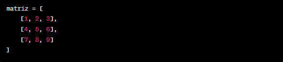
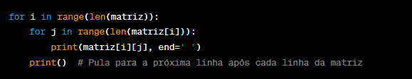

Em Python, matrizes são geralmente representadas como listas de listas, onde cada lista interna representa
uma linha da matriz. Aqui está um exemplo de como você pode criar, manipular e operar com matrizes em Python:
Crie a matriz usando uma lista de listas:

Imprima os elementos da matriz usando loops aninhados:

Quando você executar esse código, ele criará a matriz 3x3 e imprimirá seus elementos linha por linha.